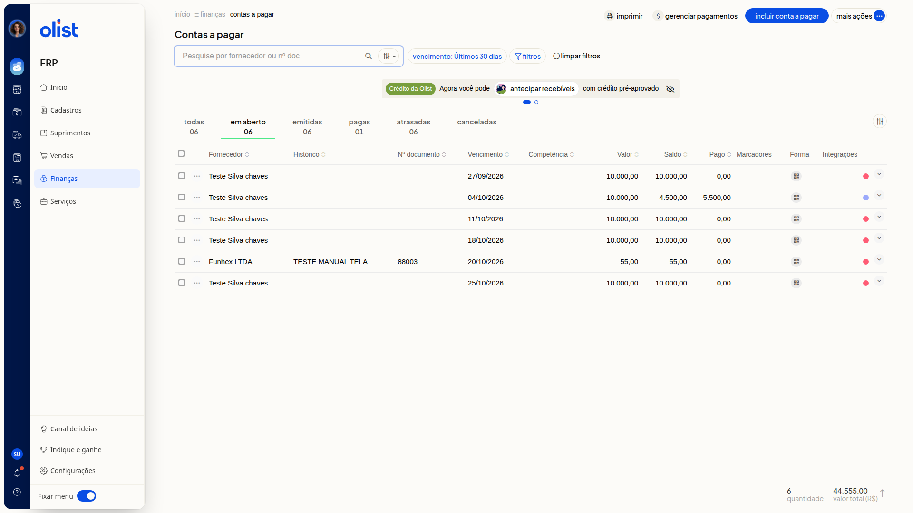

Como pesquisar e filtrar contas a pagar
Descrição
A tela Contas a pagar do ERP da Olist lista os lançamentos para você localizar o que precisa pagar. A busca, as abas de situação, o filtro de vencimento e o painel de filtros mostram só o conjunto de contas que interessa, com a quantidade e o valor total no rodapé.
Acesse Finanças > Contas a pagar para buscar e filtrar os lançamentos.
Pré-requisitos
- Acesso à tela Contas a pagar no ERP.
Importante
- Ao abrir a tela, o filtro de vencimento mostra Últimos 30 dias.
- limpar filtros remove esse recorte.
Instruções
-
Acesse Finanças > Contas a pagar.
-
Localize a busca Pesquise por fornecedor ou nº doc, o filtro de vencimento e as abas Todas, Em aberto, Emitidas, Pagas, Atrasadas e Canceladas. A lista mostra as colunas Fornecedor, Histórico, Nº documento, Vencimento, Competência, Valor, Saldo, Pago, Marcadores, Forma e Integrações.

-
Digite o fornecedor ou o nº doc em Pesquise por fornecedor ou nº doc.
-
Clique em Todas, Em aberto, Emitidas, Pagas, Atrasadas ou Canceladas. Cada aba mostra uma quantidade.
-
Abra filtros e escolha Categoria, Forma de pagamento, Marcador e Situação do pagamento.
-
Clique em Aplicar. A lista permanece filtrada, com as quantidades nas abas. O rodapé mostra a quantidade de lançamentos e o valor total. Cancelar fecha o painel e limpar filtros remove o recorte.
Resultado
A lista filtrada permanece em Contas a pagar e nenhum lançamento é alterado.
Informações adicionais
Forma de pagamento no filtro
Forma de pagamento oferece Selecione, Boleto, Cartão de crédito, Cartão de débito, Duplicata Mercantil, Pix e Outros.
Situação do pagamento no filtro
Situação do pagamento oferece Todas, Processando e Agendado.
Links relacionados
Se a busca ou os filtros não mostrarem a conta que você procura, fale com o suporte.